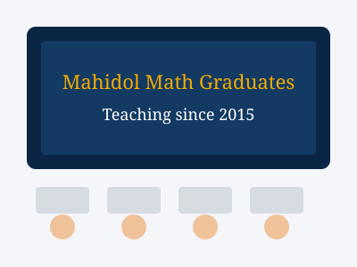

Tier 1 Tutoring School was founded to give students a clear, honest path to understanding mathematics — not shortcuts, not tricks, but real comprehension that carries them from one exam to the next and into their careers. We believe every student, at every level, can become confident in math with the right teacher and the right structure.
We teach students across the full range of ages: primary school children building number sense, secondary school students preparing for IGCSE and A-Level, college students revisiting calculus and statistics, and adults returning to mathematics for further study, career changes, or personal goals.
Because our programmes map directly onto UK Math, US Math, IGCSE, A-Level and SAT syllabuses, students always know exactly what they are being tested on and why each lesson matters.

All Tier 1 teachers are Mathematics graduates of Mahidol University, one of Thailand's leading universities.
Lead Teacher – A-Level & SAT
B.Sc. Mathematics, Mahidol University. Specialises in Pure Math, Statistics and SAT strategy.
Lead Teacher – IGCSE & UK Math
B.Sc. Mathematics, Mahidol University. Focuses on building strong exam technique for IGCSE students.
Lead Teacher – US Math & Primary
B.Sc. Mathematics, Mahidol University. Passionate about building number confidence in younger students.
Three principles guide every lesson at Tier 1.
Every student begins with an assessment so lessons target their actual gaps, not a generic syllabus.
Past exam papers and timed practice are built into every course from day one.
Parents and adult students receive regular progress updates tied to real exam criteria.